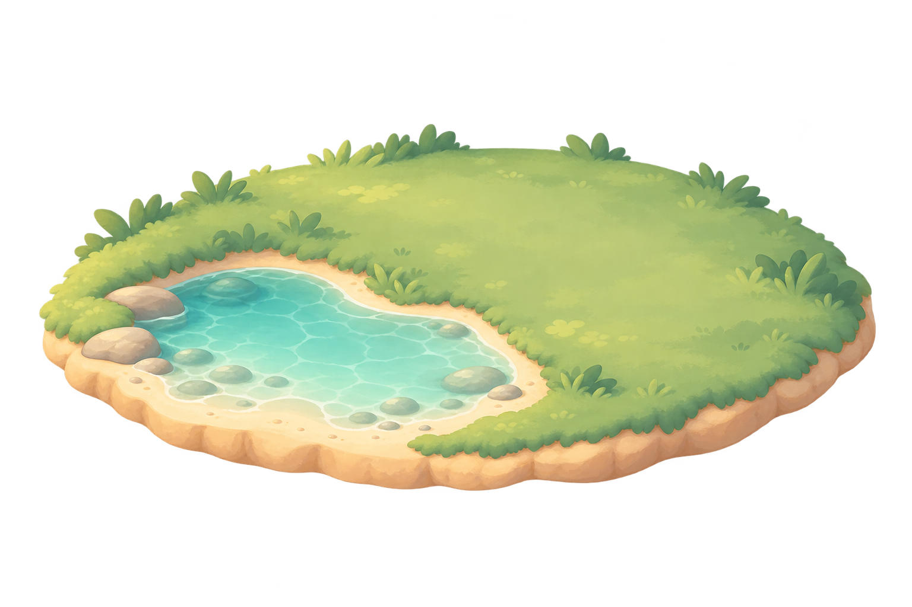
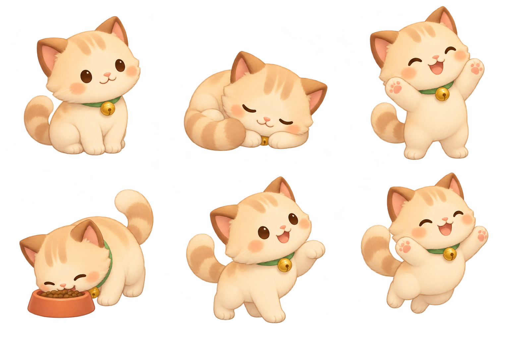

Little Island · Bộ asset đầu tiên
Minh họa ghép cảnh, tư thế Mochi, vật trang trí và icon cho app nhắc uống nước.

Bản ghép xem trước. Vị trí, tỉ lệ lớp có thể điều chỉnh khi tích hợp Flutter. Mỗi tư thế là ảnh tĩnh.
Mochi · Sáu trạng thái
Vật trang trí
Icon SVG
Ảnh gốc có nền trong suốt
Nền ô caro dưới đây do trang xem trước vẽ, không nằm trong ảnh.
